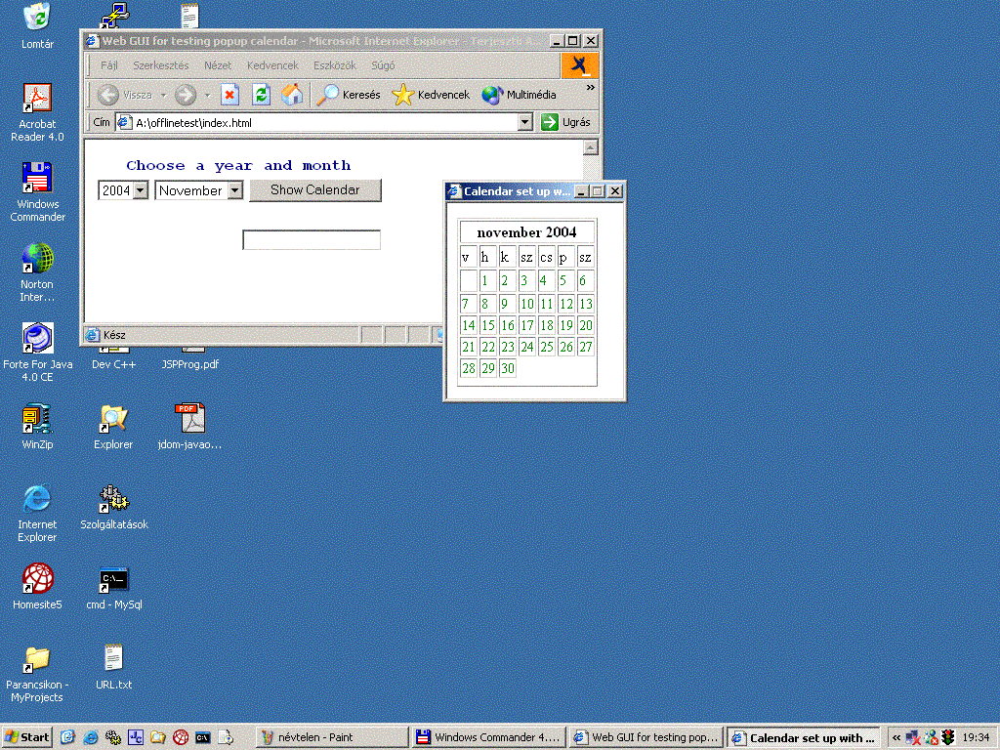

Popup calendar using Linux cal command
Contributed by Zsolt Kiss as part of the
Win With NetBeans comptetition
Download Files & Sources
The idea of this calendar came from one of my projects. Working for GE, Hungary, I had to build up an intranet application
with a web GUI that had used calendar components on more pages. I developed a fairly elaborated one with lots of work
using Date object of javascript. I had to do a few tricks to handle correctly leap years, to convert numbers
representing months and days into localized Strings, not to mention the formatting works, that rendered my calendar
in a stylish html table... The result was fine, finally I had had an own javascript Calendar class with dozens of methods...
Today I would set off on a somewhat differing way. I would use the Linux cal command...
The cal command displays the current calendar month if you call it without any input, or, if you specify the year and
month, it displays any month in any year (the value of year can be a number between 1 and 9999 and the value of month
can be between 1 and 12).
Here you can see a calling and an output of cal command in a my Linux terminal window (my local settings are Hungarian):
zsolt@linux:~> cal 12 2004
december 2004
v h k sz cs p sz
1 2 3 4
5 6 7 8 9 10 11
12 13 14 15 16 17 18
19 20 21 22 23 24 25
26 27 28 29 30 31
zsolt@linux:~>
No more need juggling with javascript's Date object, no more need conversion methods... We can simply use the output
provided by Linux cal command to build up a cute, formatted calendar to display for our customers on the web. Supposing
our web server runs on a Linux machine and it has access to run operating system commands. At my place these
conditions are fulfilled.
How it all works
But how does a Linux command's output become an input of an html page? Fairly simple way. We have to use the exec()
method of java.lang.Runtime class to start an external process (or program) outside the Java Virtual Machine. If you
call exec() passing it the Linux cal command this way:
Process p = Runtime.getRuntime().exec("cal 12 2004");
you can read the output of the command - i.e. the displayed calendar - as an InputStream:
BufferedReader br = new BufferedReader(new InputStreamReader(p.getInputStream()));
Now we have a Reader object that can be processed by a StreamTokenizer to filter spaces and not numeric values from
the output. Focusing on numbers an arbitrary formed html table can be built.
I created a CalBuilder class and a static build() method in it to format an output string that I would use in
a servlet writing out the html. Here is the CalBuilder class:
public class CalBuilder {
private static final String spanBegin = "<span style=\"color:green;font-size:14px;\" onmouseover=\"this.style.color='red';\" onmouseout=\"this.style.color='green';\" onclick=\"Send(this);\">";
private static final String spanEnd = "</span>";
public CalBuilder() {
}
public static String build(String year, String month) throws IOException {
String line;
int token;
StringBuffer cmd = new StringBuffer("cal ").append(month).append(" ").append(year);
Process p = Runtime.getRuntime().exec(cmd.toString());
BufferedReader br = new BufferedReader(new InputStreamReader(p.getInputStream()));
StringBuffer sb = new StringBuffer("<th id=\"header\" align=\"center\" colspan=\"7\">");
StreamTokenizer st = new StreamTokenizer(br);
st.eolIsSignificant(true);
st.ordinaryChar(32);
int eolCounter = 1;
int line3Tokens = 0;
while((token = st.nextToken()) != StreamTokenizer.TT_EOF) {
System.out.println(st.toString());
if(eolCounter == 1 && token == StreamTokenizer.TT_WORD) {
sb.append(st.sval + " ");
}else if(eolCounter == 1 && token == StreamTokenizer.TT_NUMBER) {
sb.append((int)st.nval);
}else if(eolCounter == 1 && token == StreamTokenizer.TT_EOL) {
sb.append("</th><tr>");
}else if(eolCounter == 2 && token == StreamTokenizer.TT_WORD) {
sb.append("<td>" + st.sval + "</td>");
}else if(eolCounter == 2 && token == StreamTokenizer.TT_EOL) {
sb.append("</tr><tr>");
}else if(eolCounter == 3 && token == StreamTokenizer.TT_NUMBER) {
line3Tokens++;
}else if(eolCounter == 3 && token == StreamTokenizer.TT_EOL) {
sb.append(padding(line3Tokens));
sb.append("</tr><tr>");
}else if(eolCounter > 3 && token == StreamTokenizer.TT_NUMBER) {
sb.append("<td>" + spanBegin + (int)st.nval + spanEnd + "</td>");
}else if(eolCounter > 3 && token == StreamTokenizer.TT_EOL) {
sb.append("</tr><tr>");
}
if(token == StreamTokenizer.TT_EOL) {
eolCounter++;
}
}
return sb.toString();
}
private static String padding(int num) {
StringBuffer sb = new StringBuffer();
if(num > 0 && num < 8) {
int spaces = 7 - num;
for(int i=0;i<spaces;i++) {
sb.append("<td> </td>");
}
for(int i=1;i<=num;i++) {
sb.append("<td>" + spanBegin + i + spanEnd + "</td>");
}
}else {
for(int i=0;i<7;i++) {
sb.append("<td> </td>");
}
}
return sb.toString();
}
}
The static strings at the top of the class are used to set some style for cells where numbers will be put in the html, and,
not least, to make them clickable for the user.
The CalBuilder class will be called by a servlet, that will insert the formatted html text of calendar
into its html output, namely into a <table></table> tag.
The servlet also writes out a javascript sender function, named Send(), that is responsible for sending
the user-clicked date back to the index.jsp page, from where the calendar component have been popped up. After
sending back the date, the popup calendar window is closed.
In the index.jsp there are two combo boxes only for sending some initial value the calendar. The popup window
will be activated on a simple html button click (not Submit element, but a Button) that calls the standard
javascript window.open() funtion.
Here you can see the servlet:
public class ShowCalendar extends HttpServlet {
protected void processRequest(HttpServletRequest req, HttpServletResponse res) throws ServletException, IOException {
String year = "";
String month = "";
if(req.getParameter("initMonth") != null) {
month = req.getParameter("initMonth");
}
if(req.getParameter("initYear") != null) {
year = req.getParameter("initYear");
}
res.setContentType("text/html");
PrintWriter out = res.getWriter();
out.println("<html>");
out.println("<head>");
out.println("<title>Calendar set up with Linux cal command</title>");
out.println(sender());
out.println("</head>");
out.println("<body>");
out.println("<table border=\"1\">");
out.println(CalBuilder.build(year, month));
out.println("</table>");
out.println("</body>");
out.println("</html>");
out.close();
}
private static String sender() {
StringBuffer javascript = new StringBuffer();
javascript.append("<script type=\"text/javascript\">\n");
javascript.append("function Send(obj) {\n");
javascript.append("var winObj = window.opener;\n");
javascript.append("var docObj = winObj.document;\n");
javascript.append("if(docObj != null) {\n");
javascript.append("var cbYear = docObj.getElementById(\"cbYear\");\n");
javascript.append("var cbMonth = docObj.getElementById(\"cbMonth\");\n");
javascript.append("var year = cbYear.options[cbYear.selectedIndex].value;\n");
javascript.append("var month = cbMonth.options[cbMonth.selectedIndex].text;\n");
javascript.append("docObj.getElementById(\"selectedDate\").value = year + \" \" + month + \" \" + obj.firstChild.nodeValue;\n");
javascript.append("}\n");
javascript.append("window.close();");
javascript.append("}\n");
javascript.append("</script>\n");
return javascript.toString();
}
}
Developing the clickable calendar with NetBeans 4.0
The following main steps I will walk you through:
Setting up a new web application with NetBeans IDE 4.0
-
Start your NetBeans and in the main menu
choose File > New Project. Under categories select Web and project let be a Web Application. Click Next.
On next page type popupcalendar as the project name and brows into a pleasing folder where
you want the IDE to create your project folder. Click finish.
-
You can check your project folder and its contents in the IDE: press Ctrl+1 to view the Project window and Ctrl+2
for File window. The IDE created a default index.jsp file and the always needed WEB-INF folder for you.
Adding the ShowCalendar servlet to the project
-
Now let's create the ShowCalendar servlet. Right click on project's name on the Project window, choose
New > Servlet, then type ShowCalendar as the class name, invent for yourself a pleasing package name
(I used com.zsoltkiss.web.misc) then click Next. On next window, rewrite the URL mappings to /cal and click
Finish. The skeleton file of your servlet is created under the package you specified. Check it
int the Project window.
-
Modify the processRequest() method of your servlet, or, you can copy-paste it from this
tutorial the whole method and insert it into your servlet class overwriting the original one.
Creating the CalBuilder class
-
Now you can add a new class to your project as the following:
Right click on the Project name, then choose
New > Java Class (simple class, not servlet!), class name is ClaBuilder, and leave the package name as it is
(the IDE offers you as a default this time the package name under which the previously created class is resident).
Click Finish.
-
Copy the source code of CalBuilder from the preceeding codes and overwrite the origal
skeleton code IDE created for this class.
Editing the index.jsp
-
Change in the IDE to the Prokect window, expand Web Pages section under your project name if is not
so and click index.jsp to open the file in the editor.
-
Modify the title of the page for a pleasing string. I gave this title for mine:
Web GUI for testing popup calendar
-
Put some javascript directly after the </title> closing tag as the following fragments shows:
<script type="text/javascript">
function showCalendar() {
var url = "/popupcalendar/cal?initYear=" + document.getElementById("cbYear").value + "&initMonth=" + document.getElementById("cbMonth").value;
window.open(url,"","width=180,height=200");
}
</script>
This javascript function is responsible to invoke the calendar component.
-
Change the whole <body></body> section to this fragment:
<body>
<table>
<th colspan="3" style="color:navy;font-family:Courier New;">Choose a year and month</th>
<form name="form1">
<tr>
<td>
<select name="initYear" id="cbYear">
<option value="1990">1990<option>
<option value="1991">1991<option>
<option value="1992">1992<option>
<option value="1993">1993<option>
<option value="1994">1994<option>
<option value="1995">1995<option>
<option value="1996">1996<option>
<option value="1997">1997<option>
<option value="1998">1998<option>
<option value="1999">1999<option>
<option value="2000">2000<option>
<option value="2001">2001<option>
<option value="2002">2002<option>
<option value="2003">2003<option>
<option value="2004">2004<option>
<option value="2005">2005<option>
<option value="2006">2006<option>
<option value="2007">2007<option>
<option value="2008">2008<option>
<option value="2009">2009<option>
</select>
</td>
<td>
<select name="initMonth" id="cbMonth">
<option value="1">January<option>
<option value="2">February<option>
<option value="3">March<option>
<option value="4">April<option>
<option value="5">May<option>
<option value="6">June<option>
<option value="7">July<option>
<option value="8">August<option>
<option value="9">September<option>
<option value="10">October<option>
<option value="11">November<option>
<option value="12">December<option>
</select>
</td>
<td>
<input type="Button" value="Show Calendar" onclick="showCalendar();">
</td>
</tr>
<tr>
<td colspan="3" headers="20"> </td>
</tr>
<tr>
<td colspan="3" class="align-right">
<input type="text" name="selectedDate" id="selectedDate" readonly>
</td>
</tr>
</form>
</table>
</body>
Build and run the project
To build and run your project in the IDE first press Ctlr+F11 to Clean and Build. If it succeds then you can run the project with F6.
These functions can be triggered from the menu of NetBeans IDE certainly.
If your project is running then IDE's built-in Tomcat will be rendering the index.jsp
Select a pleasing year and month then click the button subtitled Show calendar. If everything goes right this
should display the popup calendar. If so, then move the mouse above it. The number which the mouse goes by above
should change its color to red. If you click on it, then the selected date will be sent back to the caller page - namely
the index.jsp. This time the popup calendar closes itself. The selected date is represented by a string
that should turn on in the text box below the button on index.jsp.
You can see popup calendar and its caller page in action in these pictures below:
